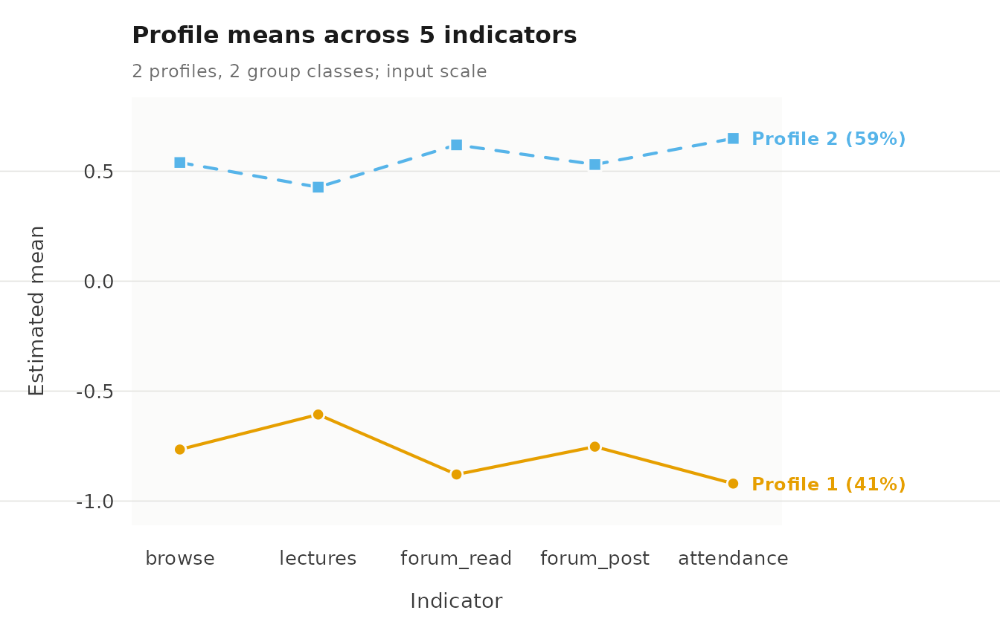
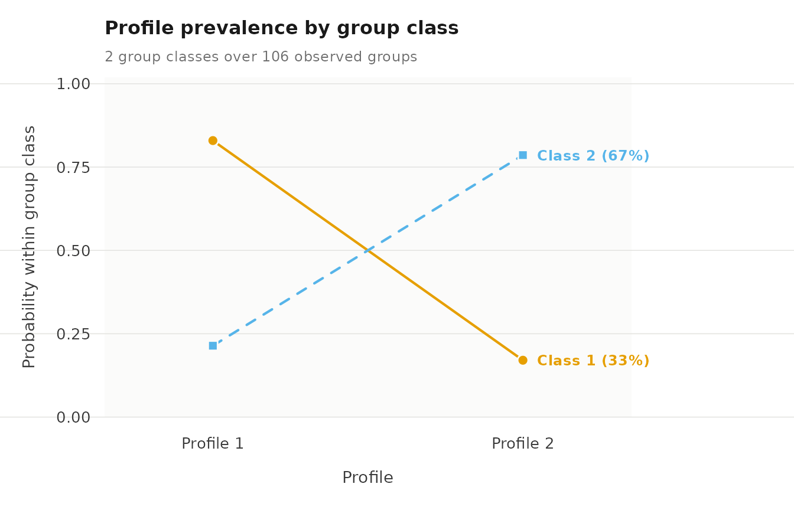

Multilevel latent profile analysis
Written by Mohammed Saqr and Sonsoles López-Pernas
Source:vignettes/lpa.Rmd
lpa.RmdMultilevel latent profile analysis (MLPA) estimates latent profiles at the observation level and, at a higher level, identifies latent group classes that differ in how probable each profile is for their observations. Each profile is characterized by a mean and variance for each indicator and is defined identically across all group classes. The group classes therefore differ only in the probabilities associated with the profiles.
Data
course_engagement has one row per course enrolment:
1,422 enrolments from 106 students. multilpa() needs two
kinds of variables.
-
Group:
studentidentifies which enrolments belong to the same student. -
Indicators: five activity measures
(
browse,lectures,forum_read,forum_post,attendance), each standardized within course, so 0 is the course average.
The data are simulated, and two further variables record the
structure that generated them: engagement for each
enrolment and student_type for each student.
Clustering within groups
To check how much each indicator varies between groups, we call
descriptives() with vars for the indicators
and id for the group. icc is the share of an
indicator’s variance that lies between groups.
descriptives(course_engagement,
vars = c("browse", "lectures", "forum_read", "forum_post",
"attendance"),
id = "student")
#> variable n n_missing mean sd min max n_distinct n_groups icc
#> 1 browse 1422 0 -2.81e-05 0.989 -3.14 2.49 398 106 0.1923
#> 2 lectures 1422 0 -4.22e-05 0.989 -2.91 3.22 399 106 0.0878
#> 3 forum_read 1422 0 7.03e-05 0.989 -2.73 2.81 400 106 0.2240
#> 4 forum_post 1422 0 -2.11e-05 0.989 -2.61 3.10 397 106 0.1503
#> 5 attendance 1422 0 7.74e-05 0.989 -2.45 2.41 401 106 0.2215Fit
To fit the model, we call multilpa() with
vars for the indicators, id for the group,
n_profiles for the number of profiles,
n_group_classes for the number of group classes,
n_starts for the number of random EM starts, and
seed for reproducible starts. Printing the fit gives the
profile means.
fit <- multilpa(course_engagement,
vars = c("browse", "lectures", "forum_read", "forum_post",
"attendance"),
id = "student", n_profiles = 2, n_group_classes = 2,
n_starts = 10, seed = 1)
fit
#> Two-level latent profile analysis: 2 profiles, 2 group classes
#> 1422 individuals in 106 groups; varying diagonal residual covariance (VVI)
#> Log likelihood: -8439.816434 | AIC: 16925.633 | BIC (groups): 16986.892
#> Converged: TRUE | iterations: 8 | best start: 8/10
#>
#> profile browse lectures forum_read forum_post attendance count proportion
#> 1 -0.766 -0.606 -0.879 -0.753 -0.921 588 0.413
#> 2 0.540 0.427 0.620 0.531 0.649 834 0.587
#>
#> Variances and standard errors: get_results(x, "profiles").
#> Every other table: get_results(x, what = ), or get_results(x, "all").To check whether the starts agree, we call get_results()
with "starts". Starts that reach the same log likelihood
support the solution.
get_results(fit, "starts")
#> start log_likelihood converged iterations error boundary
#> 1 1 -8440 TRUE 10 <NA> FALSE
#> 2 2 -8440 TRUE 10 <NA> FALSE
#> 3 3 -8440 TRUE 10 <NA> FALSE
#> 4 4 -8440 TRUE 13 <NA> FALSE
#> 5 5 -8440 TRUE 10 <NA> FALSE
#> 6 6 -8440 TRUE 12 <NA> FALSE
#> 7 7 -8440 TRUE 10 <NA> FALSE
#> 8 8 -8440 TRUE 8 <NA> FALSE
#> 9 9 -8440 TRUE 10 <NA> FALSE
#> 10 10 -8440 TRUE 9 <NA> FALSEProfiles
To obtain the profile means and variances, we call
get_results() on the fit. There is one row per profile and
indicator.
get_results(fit)
#> profile indicator mean variance standard_deviation
#> 1 1 browse -0.766 0.528 0.727
#> 2 1 lectures -0.606 0.538 0.734
#> 3 1 forum_read -0.879 0.363 0.603
#> 4 1 forum_post -0.753 0.421 0.649
#> 5 1 attendance -0.921 0.374 0.611
#> 6 2 browse 0.540 0.590 0.768
#> 7 2 lectures 0.427 0.845 0.919
#> 8 2 forum_read 0.620 0.481 0.694
#> 9 2 forum_post 0.531 0.689 0.830
#> 10 2 attendance 0.649 0.384 0.620To see the profiles, we call plot() on the fit. Each
line is a profile’s mean on each indicator, and point size shows how
common the profile is.
plot(fit)
Group classes
To obtain the profile probabilities of each group class, we call
get_results() with "profile_probabilities".
probability is the chance that an observation of a group in
that class falls in each profile, and
group_class_probability is the share of groups in the
class.
get_results(fit, "profile_probabilities")
#> group_class profile probability group_class_probability
#> 1 1 1 0.829 0.325
#> 2 1 2 0.171 0.325
#> 3 2 1 0.214 0.675
#> 4 2 2 0.786 0.675To compare the group classes, we call plot() with
what = "probabilities": one line per group class across the
profiles.
plot(fit, what = "probabilities")
Class sizes
To obtain class sizes, we call get_results() with
"counts". effective_count sums the posterior
probabilities, so it need not be a whole number.
get_results(fit, "counts")
#> level class effective_count effective_proportion
#> 1 individuals 1 587.9 0.413
#> 2 individuals 2 834.1 0.587
#> 3 groups 1 34.5 0.325
#> 4 groups 2 71.5 0.675Classification
To obtain classification certainty, we call
get_results() with "entropy". Relative entropy
is reported for observations and for groups: 1 means every case is
assigned with certainty, 0 means no separation.
get_results(fit, "entropy")
#> level n_classes n_units entropy_sum relative_entropy
#> 1 individuals 2 1422 60.94 0.938
#> 2 groups 2 106 4.44 0.940To add each observation’s assigned profile and group class to the
data, we call get_results() with "assignments"
and data for the data frame. It returns the data in its
original row order with five added columns: profile and
group_class hold the most probable classes,
uncertainty is one minus the posterior probability of the
assigned profile, and the posterior_profile_ columns hold
the posterior probability of each profile. Assignment takes the most
probable class, so profile and group_class
alone ignore classification uncertainty.
get_results(fit, "assignments", data = course_engagement) |> head()
#> student course sequence browse lectures forum_read forum_post attendance previous_grade
#> 1 1 23 1 0.73 -0.08 0.30 0.67 0.72 0.54
#> 2 1 19 2 0.68 0.53 -0.02 -0.55 0.70 -0.71
#> 3 1 4 3 -1.51 -0.51 -0.91 -0.80 -0.97 1.98
#> 4 1 18 4 0.64 -1.02 -1.62 -1.20 -1.26 -1.42
#> 5 1 16 5 -0.94 -0.37 -0.71 -0.28 -1.52 -0.67
#> 6 1 29 6 -0.36 -0.46 -0.77 -0.43 -1.34 -0.40
#> engagement student_type profile group_class uncertainty posterior_profile_1 posterior_profile_2
#> 1 engaged wavering 2 1 4.44e-04 0.000444 1.00e+00
#> 2 engaged wavering 2 1 1.49e-02 0.014858 9.85e-01
#> 3 disengaged wavering 1 1 2.42e-06 0.999998 2.42e-06
#> 4 disengaged wavering 1 1 3.86e-06 0.999996 3.86e-06
#> 5 disengaged wavering 1 1 5.75e-06 0.999994 5.75e-06
#> 6 disengaged wavering 1 1 2.28e-05 0.999977 2.28e-05Recovery of the known structure
To compare the fitted classes with known labels, we call
get_results() with "assignments",
data for the data frame, and truth for the
columns that hold the labels. engagement is compared with
the profiles and student_type with the group classes. Class
numbers are arbitrary, so the table is read by its largest cells.
get_results(fit, "assignments", data = course_engagement,
truth = c("engagement", "student_type"))
#> assignment class truth value n proportion
#> 1 profile 1 engagement disengaged 569 0.9726
#> 2 profile 2 engagement disengaged 16 0.0274
#> 3 profile 1 engagement engaged 17 0.0203
#> 4 profile 2 engagement engaged 820 0.9797
#> 5 group_class 1 student_type committed 1 0.0161
#> 6 group_class 2 student_type committed 61 0.9839
#> 7 group_class 1 student_type wavering 34 0.7727
#> 8 group_class 2 student_type wavering 10 0.2273Reference
The calls below list the other tables, functions and views available for a fitted model. Each comment states what the call returns.
# Tables: get_results(fit, what)
get_results(fit, "all") # every table, as a named list
get_results(fit, "covariances") # within-profile residual covariances
get_results(fit, "posteriors") # one row per observation and profile
get_results(fit, "posteriors", format = "wide") # one row per observation
get_results(fit, "group_posteriors") # one row per group and group class
get_results(fit, "classification") # class sizes and average posteriors
get_results(fit, "average_posteriors") # mean posterior by assigned class
get_results(fit, "classification_errors") # P(assigned class | true class)
get_results(fit, "bch_weights") # weights for three-step analysis
get_results(fit, "residuals") # residual correlations within profiles
get_results(fit, "information_criteria") # AIC, BIC and the other criteria
get_results(fit, "model") # one row describing the fit
get_results(fit, "data") # the variables used in the fit
as.data.frame(fit) # the profile table
# Summaries and diagnostics
descriptives(fit) # indicator summaries with the ICC
descriptives(fit, by = "profile") # the same, by assigned profile
diagnostics(fit) # every classification diagnostic
report(fit) # summary, diagnostics and plots together
# Inference and likelihood
parameter_inference(fit) # standard errors and Wald intervals
confint(fit) # confidence intervals
vcov(fit) # covariance matrix of the estimates
logLik(fit) # log likelihood
AIC(fit) # Akaike information criterion
BIC(fit) # BIC with the number of groups
nobs(fit) # number of groups
# Plots: plot(fit, what)
plot_views() # every view and what it shows
plot(fit, what = "bars") # profile means with 95% intervals
plot(fit, what = "heatmap") # means in standard deviations
plot(fit, what = "sizes") # effective size of each profile
plot(fit, what = "entropy") # per-case classification uncertainty
plot(fit, what = "posteriors") # posterior of each assigned profile
plot(fit, what = "avepp") # average posteriors, assigned by posterior class
plot(fit, what = "all") # every view this fit supports
# Other functions
sensitivity(fit, seeds = 1:10) # refits under several seeds
starting_values(fit) # parameters to start another fitThe evaluation vignette covers enumerate_classes(),
candidate_fit() and bootstrap_lrt(); the
covariates vignette covers three_step(),
r3step() and fit_staged(); the transitions
vignette covers lta(), get_tna() and
get_group_tna().
All tables
To see every table at once, we call summary() on the
fit, with rows for the number of rows shown per table.
print(summary(fit), rows = 3)
#> Multilevel LPA: 2 profiles and 2 group classes
#> Individuals: 1422; groups: 106; parameters: 23; converged: TRUE
#> Log likelihood: -8439.816434; AIC: 16925.633
#> BIC (groups): 16986.892; BIC (individuals): 17046.609
#> Best likelihood replicated in 10/10 starts (absolute tolerance 0.00844).
#>
#> -- profiles --------------------------------------------------------
#> profile indicator mean variance standard_deviation
#> 1 browse -0.7656 0.5285 0.7270
#> 1 lectures -0.6065 0.5384 0.7337
#> 1 forum_read -0.8792 0.3631 0.6026
#> ... 7 more rows. get_results(x, what = "profiles")
#>
#> -- responses -------------------------------------------------------
#> (no rows)
#>
#> -- covariances -----------------------------------------------------
#> profile indicator indicator_2 covariance
#> 1 browse browse 0.5285
#> 1 lectures browse 0.0000
#> 1 forum_read browse 0.0000
#> ... 47 more rows. get_results(x, what = "covariances")
#>
#> -- profile_probabilities -------------------------------------------
#> group_class profile probability group_class_probability
#> 1 1 0.8295 0.3254
#> 1 2 0.1705 0.3254
#> 2 1 0.2141 0.6746
#> ... 1 more rows. get_results(x, what = "profile_probabilities")
#>
#> -- counts ----------------------------------------------------------
#> level class effective_count effective_proportion
#> individuals 1 587.91 0.4134
#> individuals 2 834.09 0.5866
#> groups 1 34.48 0.3253
#> ... 1 more rows. get_results(x, what = "counts")
#>
#> -- posteriors ------------------------------------------------------
#> row group profile posterior modal
#> 1 1 1 0.0004438 FALSE
#> 2 1 1 0.0148577 FALSE
#> 3 1 1 0.9999976 TRUE
#> ... 2841 more rows. get_results(x, what = "posteriors")
#>
#> -- group_posteriors ------------------------------------------------
#> group group_size log_likelihood group_class posterior modal
#> 1 13 -61.52 1 1.000e+00 TRUE
#> 2 13 -71.94 1 1.000e+00 TRUE
#> 3 14 -76.69 1 6.032e-10 FALSE
#> ... 209 more rows. get_results(x, what = "group_posteriors")
#>
#> -- assignments -----------------------------------------------------
#> student browse lectures forum_read forum_post attendance profile group_class uncertainty
#> 1 0.73 -0.08 0.30 0.67 0.72 2 1 4.438e-04
#> 1 0.68 0.53 -0.02 -0.55 0.70 2 1 1.486e-02
#> 1 -1.51 -0.51 -0.91 -0.80 -0.97 1 1 2.420e-06
#> posterior_profile_1 posterior_profile_2
#> 0.0004438 9.996e-01
#> 0.0148577 9.851e-01
#> 0.9999976 2.420e-06
#> ... 1419 more rows. get_results(x, what = "assignments")
#>
#> -- classification --------------------------------------------------
#> level class n_modal proportion_modal estimated_n estimated_proportion average_posterior
#> individuals 1 586 0.4121 587.91 0.4134 0.9818
#> individuals 2 836 0.5879 834.09 0.5866 0.9849
#> groups 1 35 0.3302 34.48 0.3253 0.9690
#> odds_correct_classification
#> 76.38
#> 46.06
#> 64.88
#> ... 1 more rows. get_results(x, what = "classification")
#>
#> -- average_posteriors ----------------------------------------------
#> level assigned_class class n_assigned average_posterior
#> individuals 1 1 586 0.98176
#> individuals 1 2 586 0.01824
#> individuals 2 1 836 0.01507
#> ... 5 more rows. get_results(x, what = "average_posteriors")
#>
#> -- classification_errors -------------------------------------------
#> level true_class assigned_class probability
#> individuals 1 1 0.97857
#> individuals 1 2 0.02143
#> individuals 2 1 0.01281
#> ... 5 more rows. get_results(x, what = "classification_errors")
#>
#> -- bch_weights -----------------------------------------------------
#> level unit assigned_class class weight
#> individuals 1 2 1 -0.01327
#> individuals 1 2 2 1.01327
#> individuals 2 2 1 -0.01327
#> ... 3053 more rows. get_results(x, what = "bch_weights")
#>
#> -- entropy ---------------------------------------------------------
#> level n_classes n_units entropy_sum relative_entropy
#> individuals 2 1422 60.944 0.9382
#> groups 2 106 4.436 0.9396
#>
#> -- residuals -------------------------------------------------------
#> profile indicator_1 indicator_2 kind observed expected residual effective_n statistic df
#> profile_2 lectures attendance gaussian 0.2339 0 0.2339 834.1 6.871 NA
#> profile_1 forum_read attendance gaussian 0.2287 0 0.2287 587.9 5.631 NA
#> profile_2 forum_read attendance gaussian 0.2088 0 0.2088 834.1 6.109 NA
#> p_value p_adjusted
#> 6.388e-12 6.388e-12
#> 1.795e-08 1.795e-08
#> 1.002e-09 1.002e-09
#> ... 17 more rows. get_results(x, what = "residuals")
#>
#> -- information_criteria --------------------------------------------
#> log_likelihood n_parameters aic kic bic_groups bic_individual sabic_groups sabic_individual
#> -8440 23 16926 16952 16987 17047 16914 16974
#> caic_groups caic_individual awe_groups awe_individual icl_groups icl_individual clc_groups
#> 17010 17070 17172 17404 16996 17168 16889
#> clc_individual
#> 17002
#>
#> -- model -----------------------------------------------------------
#> n_observations n_informative n_groups n_profiles n_group_classes centering covariance_structure
#> 1422 1422 106 2 2 none VVI
#> n_parameters n_parameters_with_measurement log_likelihood aic bic_groups bic_individual
#> 23 23 -8440 16926 16987 17047
#> converged iterations boundary small_classes best_start n_best_replicated
#> TRUE 8 FALSE FALSE 8 10
#>
#> -- stages ----------------------------------------------------------
#> stage group_classes fixed log_likelihood parameters parameters_with_measurement converged
#> joint 2 <NA> -8440 23 23 TRUE
#>
#> -- starts ----------------------------------------------------------
#> start log_likelihood converged iterations error boundary
#> 1 -8440 TRUE 10 <NA> FALSE
#> 2 -8440 TRUE 10 <NA> FALSE
#> 3 -8440 TRUE 10 <NA> FALSE
#> ... 7 more rows. get_results(x, what = "starts")
#>
#> -- data ------------------------------------------------------------
#> student browse lectures forum_read forum_post attendance
#> 1 0.73 -0.08 0.30 0.67 0.72
#> 1 0.68 0.53 -0.02 -0.55 0.70
#> 1 -1.51 -0.51 -0.91 -0.80 -0.97
#> ... 1419 more rows. get_results(x, what = "data")
#>
#> 19 tables above, truncated to fit. get_results(x, what = ) returns any
#> of them whole, and get_results(x, what = "all") returns every one.Assumptions
- Profiles have the same means and variances in every group class.
- Observations are independent given their group’s class, and groups are independent of one another.
- Indicators are independent within a profile (the default diagonal
covariance;
covariance_model = "full"relaxes it). - The numbers of profiles and group classes are chosen by the analyst; see the evaluation vignette for comparing them.